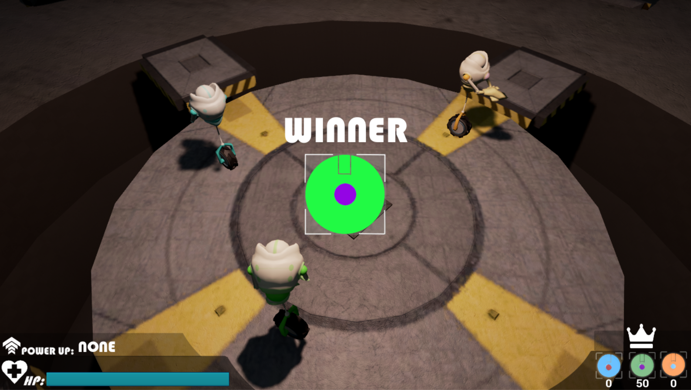
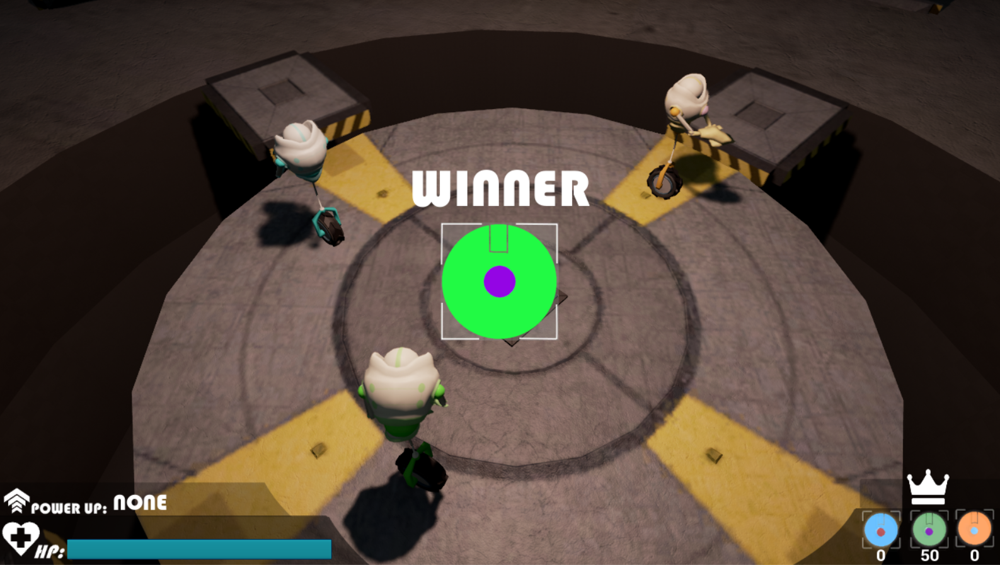

Galería


 

Prepárate para batallas sin iguales
Tienes el control de tu propio automatón, un robot diseñado y equipado con las características más eficaces para lidiar las batallas más épicas, pero serás tú quien realice las maniobras necesarias para conseguir la victoria. Usa el arma de cañones gamma para deshacerte de tus oponentes, o bien recolecta los power-ups que se encuentran dispersos a lo largo del mapa y así mejorar las capacidades de tu automatón; aumento de velocidad, modificación de la cadencia de disparo; éstas y otras ventajas te permitirán dominar a tu enemigo y ganar la batalla.
Disfruta de los combates más épicos y emocionantes que Automaton Assault puede ofrecer. Sé parte de esta increíble competencia.